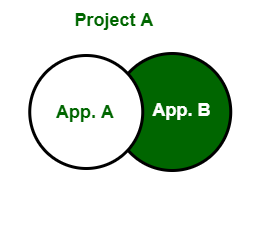
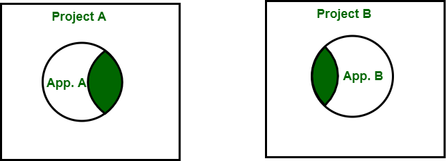
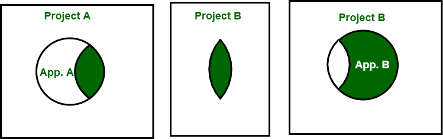

12.1 Reusability
Software reusability is the practice of using existing software artifacts — components, modules, libraries, frameworks, and design knowledge — to build new systems rather than developing everything from scratch. Reusability is a core advanced issue in the course outline and directly addresses the software crisis — the gap between what hardware can deliver and what software can produce — described in §1.6 Software Crisis.
What is software reuse?
- Software reuse is the process of creating software systems from existing software systems and knowledge, rather than building every system from scratch.
- Reuse applies existing software artifacts — code, designs, specifications, test cases, and documentation — to reduce development effort on new projects.
- Reusability is listed as a quality attribute in McCall's model (product transition factor) — see §8.5 Quality Frameworks — and as an SQA focus area in §8.2 SQA.
- Reuse is an umbrella activity in software engineering — it runs parallel to the SDLC alongside SCM, SQA, and technical reviews.
Why reusability matters
- Reusability reduces development time and cost by avoiding repeated implementation of already-solved problems.
- Reused components are typically better tested and more reliable because they have been exercised in prior projects.
- Reuse improves consistency across products — the same authentication module or logging library behaves identically everywhere it is used.
- It helps organisations respond faster to new requirements by assembling proven building blocks rather than coding from zero.
- Without deliberate reuse strategies, every project reinvents utilities, interfaces, and algorithms — multiplying maintenance cost and defect risk.
Types of software reuse
- Code reuse: Reusing source code modules, functions, or libraries — e.g. importing a math library or copying a validated sorting routine into a new project.
- Design reuse: Reusing architectural or detailed design solutions — e.g. applying a layered architecture or a proven module decomposition from a prior system.
- Specification reuse: Reusing requirements or interface specifications — e.g. adopting a standard API specification or a reusable requirements template for a common domain.
- Component reuse: Reusing self-contained, independently deployable software components with well-defined interfaces — the foundation of component-based development.
- Framework reuse: Reusing an application skeleton that defines the overall structure — developers fill in domain-specific code within the framework's predefined hooks.
- Pattern reuse: Reusing proven design-level solutions to recurring problems — design patterns are a form of design reuse; see §12.2 Design Patterns.
Characteristics of reusable components
- Generic and domain-independent where possible: A reusable component solves a general problem (e.g. date formatting) rather than one project's specific case.
- Modular and loosely coupled: The component has a well-defined interface and minimal dependencies on other modules — high cohesion, low coupling — see §5.10 Coupling and Cohesion.
- Well-documented: Clear documentation of purpose, interface, preconditions, and usage examples is essential for others to adopt the component.
- Thoroughly tested: Reusable components must be validated independently so that adopting projects inherit reliability rather than hidden defects.
- Version-controlled: Components must be tracked in a repository with version numbers so consuming projects know exactly which version they depend on.
- Configurable: Parameters or configuration files allow the same component to adapt to different contexts without modifying its source code.
DRY principle — Don't Repeat Yourself
- The DRY principle states that every piece of knowledge in a system should have a single, authoritative representation — duplication of logic should be avoided.
- DRY promotes code reuse by centralising shared logic in one place, so changes need to be made only once rather than in multiple locations.
- Centralised logic reduces errors, simplifies maintenance, and ensures consistent behaviour across the codebase.
- DRY works with modular design and the Single Responsibility Principle to build scalable, maintainable systems.
// NON-DRY — validation logic duplicated in multiple functions
FUNCTION registerUser(email)
IF NOT contains("@") OR length(email) < 5 THEN RETURN error
...
END FUNCTION
FUNCTION updateProfile(email)
IF NOT contains("@") OR length(email) < 5 THEN RETURN error // duplicated!
...
END FUNCTION
// DRY — single reusable validation function
FUNCTION isValidEmail(email)
RETURN contains("@") AND length(email) >= 5
END FUNCTION
FUNCTION registerUser(email)
IF NOT isValidEmail(email) THEN RETURN error
...
END FUNCTION
FUNCTION updateProfile(email)
IF NOT isValidEmail(email) THEN RETURN error // reuses same logic
...
END FUNCTIONComponent-based architecture
- Component-Based Architecture (CBA) organises software into reusable parts, each serving a specific function with well-defined interfaces.
- Components encapsulate both data and behaviour — they interact through interfaces without exposing internal implementation details.
- Components can be developed, tested, and deployed independently, then combined to form complete applications.
- CBA promotes modularity, flexibility, and reusability — the same login component can be reused across web, mobile, and desktop applications.
- Library modules in function-oriented design are an early form of component reuse — see §5.14 Function-Oriented Design.
Reuse-Oriented Model (ROM)
The Reuse-Oriented Model (also called Reuse-Oriented Development) builds new systems primarily by identifying, modifying, and integrating components from existing systems rather than writing new code from scratch.
- Identify reusable components: Examine the old system and select components most suitable for reuse in the new system.
- Understand all components: Analyse the selected components to understand their interfaces, dependencies, and behaviour fully.
- Modify components: Adapt old components to meet new requirements — this may involve interface changes, performance tuning, or feature additions.
- Integrate into new system: Combine all modified (and any newly created) parts into the complete new system.
- Reuse can begin at any lifecycle phase — requirements, planning, design, code, or test data — not only during coding.
- ROM reduces total development cost, lowers risk, saves time, and is efficient when a sufficient library of reusable components exists.
- ROM requires a catalogue or framework for categorising components and tracking required modifications.
- If the reusable component library is insufficient, ROM may force compromises in requirements, producing a system that does not fully meet user needs.
- Incompatible old components can impact system evolution if their interfaces do not align with new technology choices.
REUSE_ORIENTED_DEVELOPMENT(new_system, existing_systems[])
STEP 1 — IDENTIFY
FOR each existing_system DO
SCAN modules, libraries, interfaces
SELECT candidates matching new_system requirements
RECORD in reuse catalogue with compatibility notes
END FOR
STEP 2 — UNDERSTAND
FOR each selected component DO
ANALYSE interface, dependencies, behaviour, constraints
DOCUMENT findings and modification needs
END FOR
STEP 3 — MODIFY
FOR each component requiring change DO
ADAPT interface / logic to meet new requirements
TEST modified component independently
VERSION and publish to component repository
END FOR
STEP 4 — INTEGRATE
ASSEMBLE modified + new components into new_system
RUN integration and system tests
VERIFY new_system meets all requirements
END REUSE_ORIENTED_DEVELOPMENTReuse Maturity Model
The Reuse Maturity Model describes how organisations evolve their reuse practices from ad hoc copying to controlled, version-tracked component libraries:
Level 1 — Single project source-based reuse

- All source code is placed within a single project that holds multiple applications.
- There is no need to copy files between projects because everything lives in one pool.
- This approach does not scale well — as applications and developers increase, maintaining a single source pool becomes difficult.
Level 2 — Multi-project source-based reuse

- Source code is divided into multiple projects; common utilities are copied from one project into another.
- Bug fixes must be applied to every copy of the reused code — maintenance becomes difficult as copies diverge over time.
- Two host projects that evolve reused code independently make long-term maintenance increasingly costly.
Level 3 — Ad hoc binary reuse

- Utility source code is placed in its own independent project with its own lifecycle.
- Application projects include binary artifacts of the utility project rather than copying source code.
- Only a single version of the utility needs to be maintained — fixes benefit all consuming applications.
- Without release procedures or dependency management, it is difficult to know which exact version of a utility an application uses.
Level 4 — Controlled binary reuse
- Builds on Level 3 — project boundaries remain the same (application projects + component projects).
- Each release of a component project is controlled and tracked with a version number.
- When a bug is discovered, the exact version containing the bug can be identified and fixed systematically.
- Follows the Reuse/Release Equivalence Principle — the effort required to reuse a component must be no greater than the effort required to release it.
- Level 4 is the target maturity level for organisations building serious component libraries.
Reusability vs re-engineering vs reverse engineering
| Concept | Definition | Goal |
|---|---|---|
| Reusability | Using existing artifacts to build new systems | Reduce cost/time; improve quality through proven components |
| Re-engineering | Examining and modifying an existing system to improve functionality, performance, or adaptability without changing core purpose | Restructure legacy systems for maintainability and technology upgrade |
| Reverse engineering | Deconstructing a system to recover design and requirements from existing code | Recover lost documentation; enable reuse; assist maintenance |
- Re-engineering activities include: reverse engineering, restructuring, forward engineering, and re-documentation.
- Reverse engineering steps: collect information → examine → extract structure → record functionality → record data flow → record control flow → review design → generate documentation.
- Reverse engineering supports reuse by recovering design knowledge from legacy systems where documentation is missing or outdated.
- Re-engineering costs significantly less than new development and carries lower risk because it improves systems incrementally rather than replacing them entirely.
- Full detail on re-engineering and reverse engineering is covered in Topic 10 — Software Maintenance.
Reusability and design patterns
- Design patterns are a form of design-level reuse — they capture proven solutions to recurring design problems so teams do not reinvent solutions for common situations.
- Code reuse operates at the implementation level; pattern reuse operates at the design level — both complement each other.
- Patterns establish a common vocabulary for communicating design decisions across teams and projects — see §12.2 Design Patterns.
- High cohesion and low coupling — principles from §5.10 — are prerequisites for both reusable components and well-designed patterns.
Q: Define software reusability. List types of reuse, characteristics of reusable components, and levels of the Reuse Maturity Model. Differentiate reuse from re-engineering and reverse engineering.
Model answer points:
- Software reuse = creating systems from existing artifacts/knowledge, not from scratch; addresses software crisis.
- Benefits: reduced cost/time, better quality/consistency, faster response to requirements.
- Types: code, design, specification, component, framework, pattern reuse.
- Reusable component characteristics: generic, modular, low coupling, documented, tested, version-controlled, configurable.
- DRY principle: single authoritative representation; avoids duplicated logic.
- ROM 4 steps: identify → understand → modify → integrate.
- Reuse Maturity Model: L1 single project; L2 multi-project copy; L3 ad hoc binary; L4 controlled binary with version tracking.
- Reuse vs re-engineering vs reverse engineering: build new from existing vs improve legacy vs recover design from code.
- Patterns = design-level reuse; link to coupling/cohesion and OOD.